Every picture here was rendered by the test suite, not taken by
hand: npm run shots drives the real game, freezes the animated
grain and captures the frame. They are downscaled to 480 px wide
— 1.1 MB for the whole set, against about a hundred times that at full
size, so the source PNGs stay in the private repository.
05-keypadEmissive display with power on — the only surface allowed to bloom indoors.
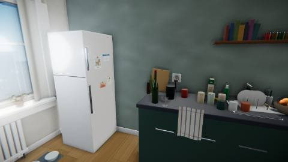
06-kitchenCounter run: dishes, tins, the scorched socket. Density at reading distance.
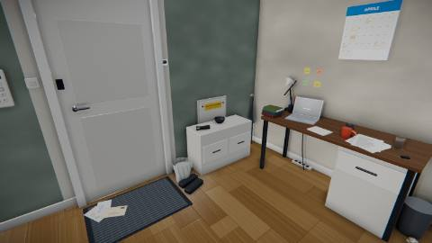
07-entranceEntrance: shoes, mat, coat rail, skirting shadow along the left wall.
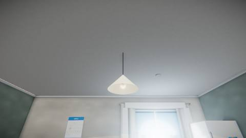
08-pendantPendant lit, and the shade doing its job: bulb glowing inside it, ceiling above unblown and evenly toned.
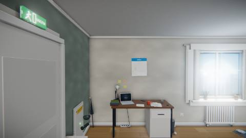
09-consumer-unitConsumer unit open: breaker labels legible, riser hatch released.
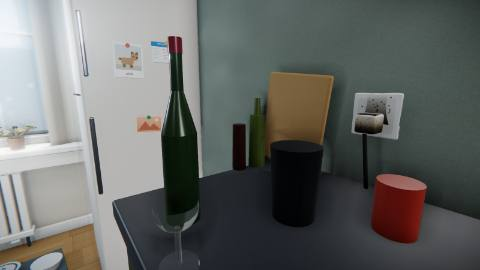
10-burnt-plugThe scorched plug. The room's loudest single clue must stay loudest.
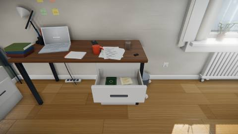
11-open-drawerOpen drawer: passport and manual readable, not lost in the new clutter.
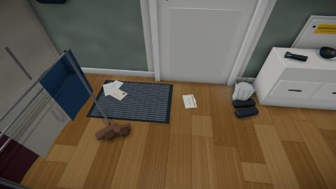
12-doormatLifted doormat and the flyer beneath it.
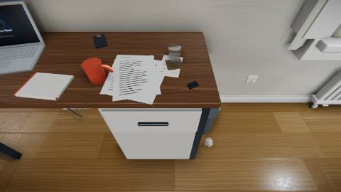
13-receiptReceipt flattened on the desk: the April date has to survive the jitter pass.
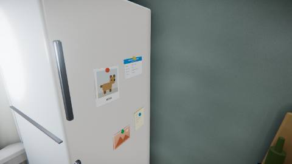
14-fridgeFridge door: magnets and calendar, the second half of the date clue.
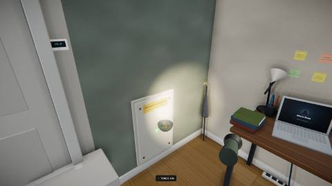
15-carry-torchThe verb: a lit torch held in hand, its beam on the riser, inventory bar below.
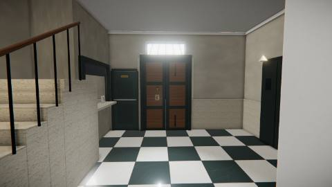
16-hall-wideThe hall from the flat door: marble, dado, 3.4 m ceiling, and the one shaft of daylight through the fanlight over the portone.
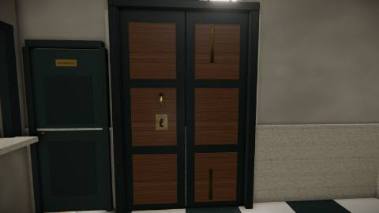
17-portoneThe way out. Two leaves, the lock plate at face height, the fanlight above — the frame that has to make the door read as the goal.
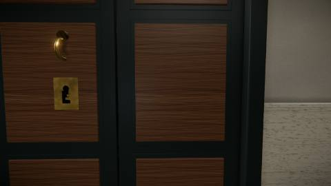
18-keywayThe whole of room two's deduction in one frame: the keyway cut in the shape of the key that opens it. If this is not legible at reading distance the room is unsolvable.
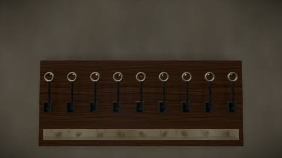
19-key-boardNine keys, nine hooks, and a card strip a leak has taken the numbers off — the premise made visible. The webs must differ readably at this distance.
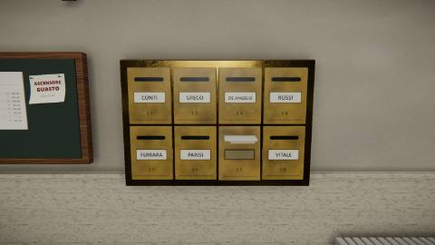
20-letterboxesEight boxes, seven cards. 17 is brown where the others are polished and its flap will not lie down. Nothing here says the word "empty".
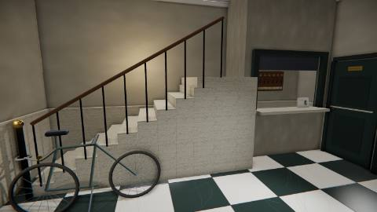
21-stairsThe stairwell: flight, banister, bicycle, lift. Geometry the player cannot walk up must still look like it goes somewhere.
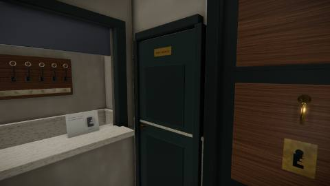
22-porters-doorThe porter's door, in the west wall between the portone and the booth. It is the failure ending's way out, so a player has to be able to stand somewhere legal and see it — which the walk probe now asserts, and this frame shows.
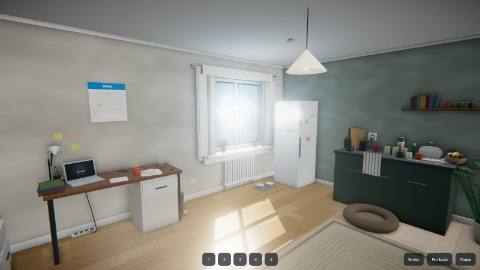
23-touchThe tablet control layer over the opening view. Both thumb zones are invisible until a thumb lands, so the only permanent furniture is the action row along the bottom. A tablet player should see the room, not the controls.24-reportThe end screen and the one thing the game asks for. Issue #6 needs a stranger's session, and the ask has to arrive after the ending lands, read as optional, and say plainly that nothing was sent anywhere.
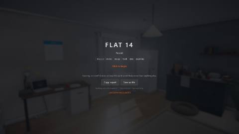
25-report-pausedThe same ask, on the pause card, for the player who never reaches an ending. Those are the sessions issue #6 most needs and the button used to be unreachable from them. It has to read as a way out, not a toll gate.26-black-frame-noticeWhat a player hit by issue #10 now sees. The canvas is hidden because the frame this appears over is black by definition; the notice is DOM, so it survives a render producing nothing. Three sessions of that bug produced zero reports, because nothing on screen said it was a bug or that it could be sent to anyone.
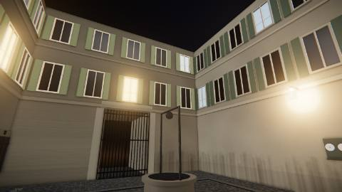
27-cortileThe courtyard, from just inside the androne. ADR-008 in one frame: the portone opened *inward*, and what is on the other side of it is nine metres of palazzo and a square of night sky, not the street. Twenty-two windows, six of them lit, and the way out is the gate at the far end — visible from here and shut for ten more rooms.
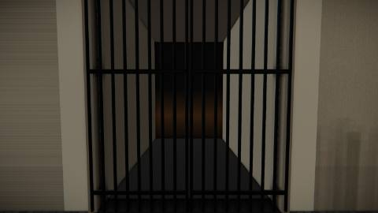
28-cortile-gateThe carriage gate, close. It must read as a way out and as impassable at the same time — see-through iron, so the player can look down the passage at the street, with the stop in the collision model rather than in a flag.
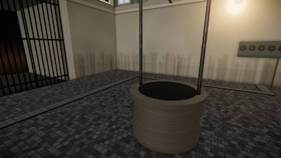
29-cortile-wellThe wellhead, and the setts around it. The courtyard is the first room in this game with no ceiling and the first whose floor is not a plane the player walks on indoors; if the paving and the drum do not read as stone here, the room reads as a corridor with sky.
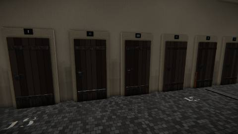
30-cellarsSix cellar doors along the south range, marked I to VI in cast iron. Room three's lock is in this frame and nothing in it is a puzzle piece: six plank doors, six padlocks, six numerals. What is missing is the only thing that matters — not one of them carries a flat number, and there are eight flats.
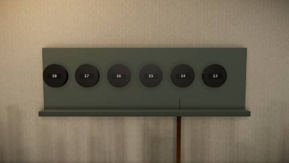
31-metersThe water meters, close enough to read. Eighteen, seventeen, sixteen, fifteen, fourteen, thirteen, left to right — the fitter's order, taken standing at the cabinet. The player reads them from across the courtyard, facing the other way, so the honest label is also the trap.
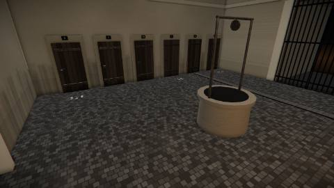
32-trenchThe trench: relaid setts running out from the meter cabinet, along, and up to exactly one door, with bright new copper standing at each end. The third witness, and the one that needs no counting — a player who never works out that the two runs count in opposite directions can still follow a pipe.
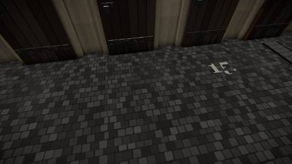
33-chalkThe merchant's chalk, on the paving in front of the doors. Three of six numbers survive, which is enough to fix a direction and a step and not enough to be the answer written down. The number on the ground and the numeral above the door disagree, and that disagreement is the whole of room three.
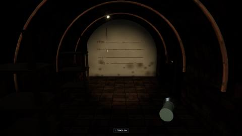
34-cantina-torchThe cantina, with the bulb off and the torch lit. This is the bill for room one: a dead torch and two cells were the flat's second-best moment and then the tool did nothing for two rooms, and a screenshot claiming it had earned itself in the hall was deleted because the frame said otherwise. Here the room is a brick barrel with no light in it at all, and the beam is the only thing there is.
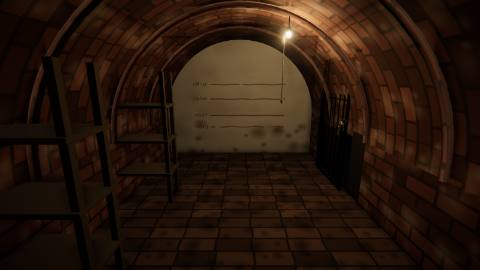
35-cantina-bulbThe same cellar with the pull cord pulled. Forty watts on a flex: the end wall is readable and the vault behind the player is not, which is the whole of ADR-009. If this frame lights the entire room the torch has nothing left to do and room four stops being about light.
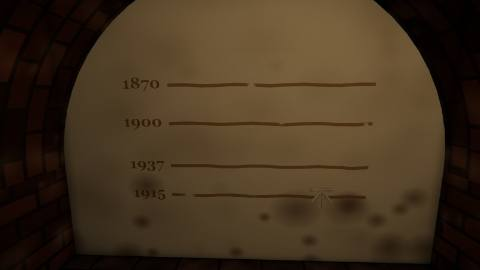
36-floodsFour flood marks on the whitewash under the bulb — 1870, 1900, 1937, 1915, each beside the band it belongs to. Faded ochre on limewash over four metres is a low-contrast, large-area, coloured signal, which is the one class of thing a weak flat lamp shows and a hard torch cone destroys. The years must be legible here or the lock has no question in it.
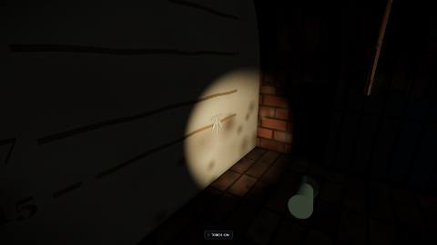
37-benchmarkThe surveyor's mark, raked by the torch brought across the cellar. It is cut geometry and not a painted line — and the strokes that carry it stand upright, which is the correction this room needed. Version one cut a horizontal V, and a horizontal groove answers to how *high* the light is: the bulb hangs high, the torch is carried at eye height, so the lamp that was supposed to hide the mark was the one that showed it. Upright strokes answer to the light's bearing instead. The bulb hangs almost square in front of this patch of wall and flattens them; a torch carried to one side arrives at sixty degrees, lights one face of every stroke and leaves the other black. The room stops being "turn the light off" and becomes "bring the light across".
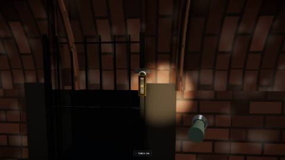
38-padlockThe second witness (ADR-003 D2): four brass wheels, worn bright at the digits they have been set to. Two per wheel, because the lock has been set twice in its life — except the third, which carries the same digit in both and is polished once. Sixteen orderings, two of which read as years. It confirms the wall and it cannot replace it.
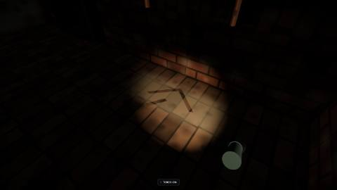
39-dustThe trace room four owes room twelve: two wheel arcs and a stand, in a decade of cellar dust, and no bicycle. ADR-007's finale reads five traces from across the building and one of them is a bicycle that moved. A dust shadow is invisible under a lamp and a cliff under a raking beam, so the finale's trace lives in the one room whose rule is exactly that.
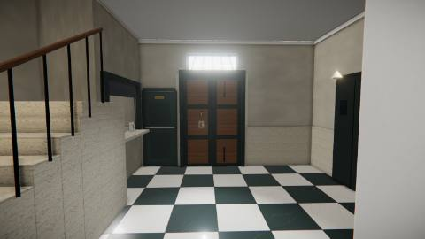
40-hall-ladderThe hall after the quality ladder has dropped a level and climbed back — the resize path, which start-up never exercises. At --dpr 2 this is the machine that reported walls reading black. The occlusion and bloom passes must be the same resolution as the colour target they are blended into; they were half of it.
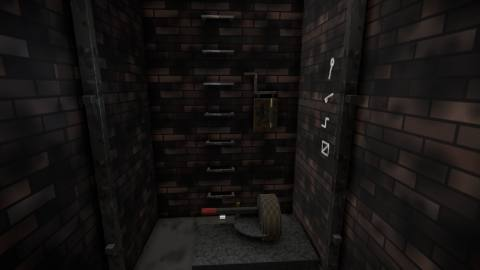
41-shaftThe lift pit, from just inside the gate. The premise is in the first frame (ADR-006): two guide rails and a rope going up out of the light, and nothing at the bottom of them but the machine that put whatever is up there up there. Beyond the car's path, the working bay — winding gear, switch box, the handle in its bracket, the fitter's chalk on the return wall. All of it out of the car's way, which is what a lift pit with hand-winding gear actually looks like, and what the first version of this room got wrong badly enough to make it unfinishable: at 1.70 m the shaft was very nearly exactly the car, so the moment the player wound it down there was nowhere left to stand and nothing left to reach.
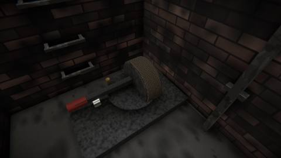
42-pin-liveThe circuit is live and the pin is standing out of the quadrant, straight through the arc the brake arm has to swing along. This is the whole room in one object. If a player cannot see that the pin is in the way, ADR-010's central affordance is invisible and the design is a lie — so this frame and 43 are the same camera with one thing changed, and the difference between them is the claim.43-pin-deadThe knife is out and the pin has dropped flush. Compare with 42: same camera, same light, one part moved 125 mm. That movement is the only thing in the game that teaches the player what the isolator is for, and it has to be legible at a glance from where a person actually stands.
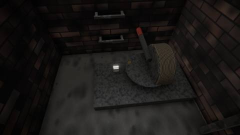
44-socket-clearThe brake arm swung off the shaft, and the socket clear. Set, the arm lies straight across it and the handle will not go on — which is why the arm is 460 mm long. A short arm would be a lever; this one has to be an obstruction, because the obstruction is the instruction.
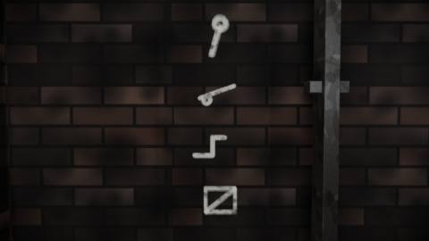
45-chalkThe second witness (ADR-003 D2): four marks in chalk, one under the other, in the same hand as the meter numbers in room three. Not words and not numbers — the shapes of four things, in the order somebody used them. A numbered list is an instruction, and the moment the wall gives instructions the machine stops being worth looking at.
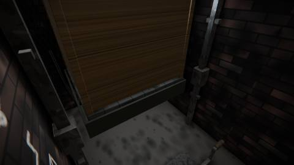
46-car-downThe car at the landing, wound down by hand, hanging at landing level with its apron a stride above the pit floor where a minute ago there was nothing but two rails and a draught. Compare 41, taken from the same bay with the car still up: rails going into the dark and the underside of the thing at the top of them. Nothing here was unlocked and nothing was told -- the machine was put in the right order and it delivered the car, which is the only reward ADR-010 offers and the only one it needs. The frame is taken from the bay rather than the landing because the car, down, fills the landing end of the shaft completely; two earlier attempts put the camera 0.14 and 0.37 m from a panel and produced a wall of brown, which is a fair description of what a lift car is at arm's length and no description at all of where it is.
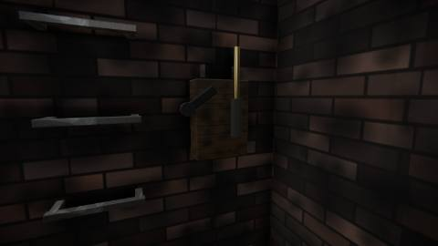
47-handle-offThe third interlock, which is the one this room had to be redesigned around. ADR-010 first said the winding handle fouled the switch box's lid — but the car nearly fills the shaft, so nothing operable at both ends of the sequence can sit next to the socket, and that interlock could not be built anywhere a player could reach it. What is here instead is the same idiom as the brake's plunger, one floor down in the story and one bolt across in the ironwork: the handle lives in a bracket on the switch box, and lifting it out raises a second brass pin into the knife's jaws. The switch will not close while the handle is on the shaft, and the reason is a part you can see rather than a sentence you are told.
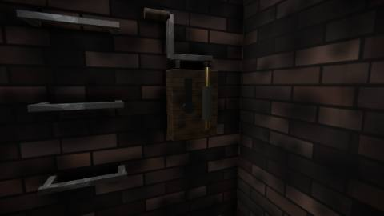
48-handle-homeThe same fitting with nothing done to it, and the pair is the claim. The winding handle is lying in its two bracket lugs on the lid of the switch box, and the brass pin is down in its housing with only its head showing above the collar. Read this frame against 47 and the mechanism explains itself without a word of narration: handle in, pin down, knife free to close; handle out, pin up across the seat, knife stopped half way. Neither frame alone proves anything -- a pin at one height is just a pin -- which is why the evidence set carries both. The pin is deliberately visible at rest rather than hidden inside the box, because the brake plunger one act earlier taught the player to read a pin's height, and a part that disappears when it is not doing its job teaches nothing.
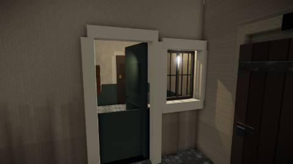
49-lodge-doorThe lodge door, open, off the androne — and the player has walked past it shut since room three. ADR-011 first put this door in the hall, beside the booth the board is read through, and the hall has no wall to put it in: the booth takes x -8.55 to -6.45 of that side and the stair's half-landing, a solid travertine mass 1.71 m tall, takes -6.45 to -5.35 for the full depth up to it. A doorway was cut, framed, lit and rendered there before anything noticed it opened into the side of a staircase. A porter's office door belongs on the carriage passage anyway: he watches the gate, and his door is two strides inside it.
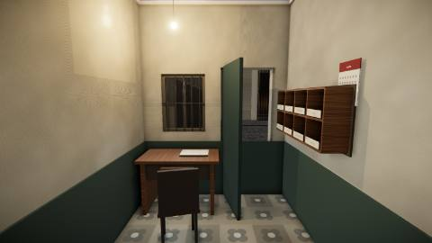
50-portineriaThe lodge from inside: the desk under the courtyard window, the pigeonholes on the left, the flex and its bulb. The ceiling is 400 mm lower than the hall's on purpose -- a lodge is a room fitted into a gap, not a room the building was planned around -- and the drop is the first thing the body reports on stepping through the door. Nothing in this frame is narrated anywhere in the game.
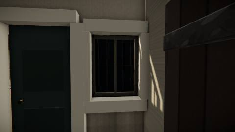
51-lodge-windowThe same window from the courtyard, which is the second half of frame 50 and the only proof that the two rooms share one hole rather than each owning a private one. The wall between them is 0.16 m thick -- the androne's thickness, restated in code by subtracting one room's edge from the other's so it cannot drift -- and the reveal is that thickness deep. This pair is also the see-through check the owner's bug report earned: a hole cut in one shell and not the other is exactly how room one became visible through room two's wall.
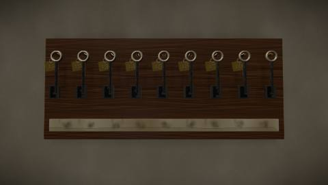
52-fobsThe key board through the hatch, and the third of the three records. The board's own label strip is ruined -- that is room two's premise and has been since the second room -- so what says which key belongs to which flat is the brass fob hanging off each key, stamped with a number by a punch struck twice and a little off register. Two of them are not on the hooks the day-book says they are on. That is the one lie in room six, and it has hung here legible for four rooms before anybody had a reason to read it: ADR-006's "premise visible and never narrated" taken as far as it goes.
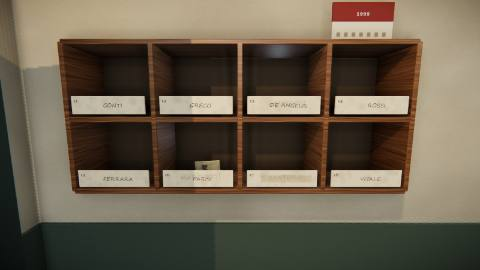
53-cardsA pigeonhole card at reading distance. Every name on room two's letterboxes appears here, and three of the cards have been written twice: the earlier name struck through in a different hand and a different ink, the later one above it. Flat 16 reads MARCHETTI under PARISI, and MARCHETTI is the name the day-book gives for deposit 207. This is the hinge of the room -- the day-book knows the name, the cards turn the name into a flat, and the fobs turn the flat into a hook -- and no line of text anywhere says so.54-daybookThe day-book open on the desk at the November entry, with the luggage label's 207 in the left column. It gives a date, a name, a hook number and what was left. The hook number is wrong, and nothing in the book admits it -- the fobs are what catch it out. A record that lies and a record that catches it are the whole lock; the counterfoil in pigeonhole 16, carrying a pencil rubbing of the key's web, is the second independent witness ADR-003 D2 requires, and it can be matched by shape alone without reading a word.55-anditoThe andito: a 1.10 m service passage off the back of the lodge, running the depth of the south range to the coach house. It is the only new circulation in seven rooms and it exists because the rimessa had to be reachable without inventing a storey -- the game is strictly one level and always has been, `camera.position.y` is the literal 1.62 at all six places that set it, and room bounds carry no y at all. A ramp that visibly fell and then delivered the player level would have been a lie they could see. Vertical movement is room eight's question and belongs to room eight alone.56-rimessaThe rimessa down its own length: 14.17 m of brick barrel, crown at 3.50, wide enough for a cart and a person standing on it. The clip run is the horizontal thing on the left wall -- eight conduits in eight cleats, every one of them below the springing at 2.05 so the run is on wall and never on vault, which is both how a real one is fixed and the reason the stack keeps its order. A run without cleats is eight pipes that could be anywhere.57-boardThe board. Eight porcelain fuse-carriers on slate, two rows of four, in the order they were fitted. One is in newer ceramic and that is the only thing in the room that says a rewire ever happened -- it does not say which way it pushed the run. The paper labels perished decades ago and no letter comes off them. The brass plate gives the board a name and a date and nothing else: ADR-012's lock is that the board's order and the run's order disagree by one, and nothing anywhere writes either order down.58-runWhere the two orderings come apart. Eight conduits leave the board stacked bottom to top in run order and turn east along the wall; the newer carrier's conduit is not on top, it is threaded into the middle, because a fitter runs a new pipe where it is shortest to reach the thing it feeds and the sump is in the middle of the vault. Everything above that clip is one along. Counting the shutter's conduit off the run and pulling that many along the board is the trap, and it yields a specific wrong circuit rather than a shrug.59-silentThe second witness, ADR-003 D2, and it is a light rather than a document. Seven of the eight carriers put something out that can be seen from this spot without moving -- two vault lamps, the bench lamp, the pump pilot, the charger on the scooter, the passage lamp down the vault, and the cellar bulb through the barred light over the side door. The eighth changes nothing, and that is the answer. It is only usable once the other seven are accounted for, and it can be read by somebody who cannot read.60-shutterThe shutter up, and the ramp to the street beyond it -- and at the top of the ramp, a barred gate, which is the whole of room eight's premise standing in daylight (issue #32). This is a frontier and not an ending -- ADR-007 puts five more spaces after it. Beside the motor hangs the emergency chain, which is the failure path made visible long before it is needed: three wrong fuses take the controller and the same shutter goes up by hand, slowly, under a courtyard of windows, and the building remembers it was heard. Same way out, worse. The fuse from the porter's drawer is motor-rated, so a wrong fitting does not blow the fuse -- it burns that circuit's wiring, permanently, which is what makes every guess cost something the player can see.61-notes-carriedThe notes panel, and issue #27 in one frame. The owner replayed room one in two minutes by ignoring every clue, which is by design — but two of the things in this list are still owed to a later room and the panel used to draw them exactly like the four that are finished. The mark says only that a clue is still worth something; it never says where it is wanted, because that would hand over the room it belongs to.61-wellThe stairwell well, cut in room two's ceiling by room eight. The frame before this one, shot 21, carried the claim "geometry the player cannot walk up must still look like it goes somewhere" -- and for six rooms the somewhere was a lie, because the ceiling was a closed plane 3.40 m up and the flight ran into it. ADR-013 cuts the opening out of the flight's own dimensions rather than out of four typed numbers, so a stair that moves takes its well with it. This is the first thing in the game the player can look up through.62-shaftFrom the half-landing, which the player can now stand on: eye at 1.71 + 1.62 = 3.33, seventy millimetres under the old ceiling, which is why the ceiling had to go. Three storeys of shaft, the return flight climbing away, and the lantern at the top -- the one surface in this building with sky behind it at four in the morning. It is dim on purpose. A skylight bright enough to light the stair would make the shaft a lamp; this one only makes the player look up.63-climbStanding on the sixth tread, 1.13 m above the hall floor, looking back down the flight at the half-landing. The floor model is one sentence -- you stand on top of whatever is under you, if you could have stepped up onto it -- and every height in this frame is a Box3 measured off geometry that has been in the game since room two. Nothing about the stair moved; the mass simply stopped being a wall and started being a floor one riser at a time.64-returnStanding on the half-landing, looking back the way a stair goes: the return flight climbing east to the first floor, its balustrade, and the underside of the landing slab that closes the top of the well. Nothing here is walkable and that is the premise, not an omission -- ADR-006 says the premise is visible and never narrated. The player can see the way out is up, and can see exactly how far.65-key-in-handA key off the board and in the hand: bow, shank and web, the whole of it inside the frame. It used to arrive as one limb — the held clone was scaled by its largest dimension and a key is almost all length, so the rest of it fell outside the near clip.66-gateThe gate at the top of the ramp, and the lock on room eight (issue #32). Every other room in this game is opened by something the player finds; this one is opened by something they rule out. The shutter goes up, the street is right there, and it is barred, chained and padlocked from the far side -- so the last horizontal answer the building has is gone and the only direction left is the flight in the hall, which has been standing in plain sight since room two. It is drawn as bars rather than a leaf on purpose: a solid gate reads as a door that might open, and a barred one shows the street through it and makes the refusal legible in a single glance. Nothing narrates this. The shutter has to be up before the gate can even be seen, which is why the premise cannot arrive early.
Other frames (35)
Captures kept as a record — a bug reproduced, a fix confirmed,
a release checked. They assert nothing on their own.